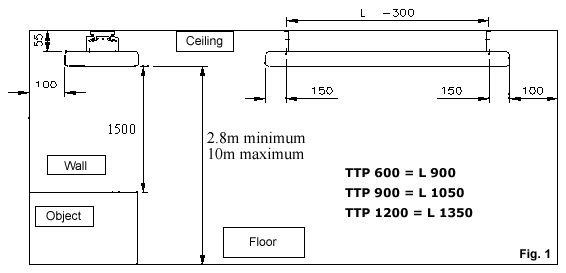
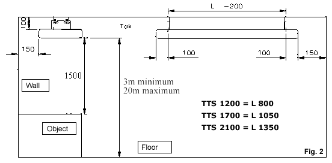

BN Thermic Instruction Sheet
Radiant Cassettes TTS & TTP
INSTALLATION AND OPERATING INSTRUCTIONS
PACKAGING - Unpack the heater and remove all packaging material and check for transit damage. Keep these instructions for future use.
LOCATION -
TTP600 - 1200 - These heaters are designed for ceiling
mounting using the mounting kit provided, this is located in the terminal
box. Screw the two brackets to the back of the heater using the holes
provided, screw the other two brackets on the ceiling with the centre
distance for the mounting holes as shown in fig 1. Offer the heater to
the ceiling brackets and screw into place using the screws provided. Refer
to diagrams on reverse for mounting instructions and clearances.
TTS1200 - 2100 - The heater includes ceiling mounting kit. Screw
the brackets to the end of the heater and the two corresponding brackets
to the ceiling with the centre distance for the mounting holes as shown
in fig 2. Offer the heater to the ceiling brackets and screw into place
using the screws provided. Refer to diagrams on reverse for mounting instructions
and clearances.


POSITIONlNG - The heater must not be located below a fixed socket. For optimum performance, the mounting heights on the diagrams should be observed. Ensure the heater has adequate air flow around at all times, and no object is closer than 1.5 metres from the discharge outlet.
CONNECTIONS - 230V ac Model - All electrical connections
must be carried out by a qualified electrical engineer. Connection to
the mains should be made by way of a suitable switch, plug or other device
and in accordance with current regulations and protected by an appropriate
fuse or circuit breaker. Connect the heater using the Live cable, usually
brown to the terminal marked L, connect the Neutral cable usually blue
to the terminal marked N, and connect the earth cable usually green/yellow
to the terminal marked E, and having the symbol  .
THIS UNIT MUST BE EARTHED.
.
THIS UNIT MUST BE EARTHED.
CONTROLS - The thermopanel does not have a fitted thermostat. Operating instructions must be drawn up to complement any external controls.
STARTING UP - Check integrity of all external cables and connections prior to energising. Turn power on and check switches and or thermostat if fitted etc, function properly.
GENERAL MAINTENANCE ON ELECTRIC HEATERS
Prior to commencing any periodic cleaning or servicing always ensure
the supply to the heater is completely isolated.
BN Thermic Electric heaters are factory assembled and tested they are
non user serviceable.
The heaters are intended to operate for many years, problem free.
All moving parts are factory lubricated and therefore should require no
service.
Operating and maintenance is limited to keeping surface areas especially
the top free from any accumulation of dust or any other foreign materials.
Any dust build up can be loosened using a brush and a vacuum cleaner applied
to the airways to ensure completed removal of any dust. When the heater
is first turned on after cleaning an unusual odour may be noted this is
due to the dust particles which inevitably will be disturbed and will
be burnt off during the heating process.
If in any doubt always consult a qualified electrician for advice.
WARRANTY - Your BN Thermic Heater is guaranteed for the period of one year from the date of purchase. We will repair or replace at our discretion any part found to be defective. BN Thermic cannot assume any consequential liability. This guarantee in no way prejudices your rights under common law and is offered as an addition to consumer liability rights.